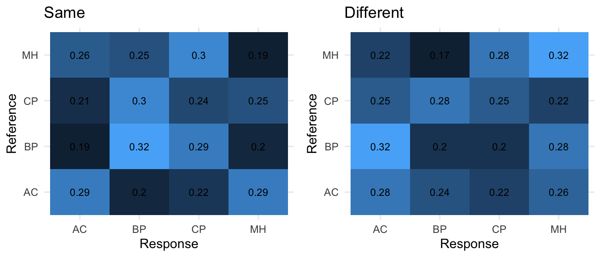

On the data analysis of perceptual matching of concert hall acoustics
In this post I will briefly discuss and illustrate the analysis of perceptual matching experiment on concert hall acoustics. How the sound samples / auralizations of concert hall acoustics in this experiment were made is a topic of another time.
(This presentation is prepared for and presented in the “Acoutect Research and Demonstrator Workshop 5” held at Aalto University in 20-24 January 2020)
Introduction
The background of the experiment is on our previous research on concert hall acoustics with the loudspeaker orchestra and spatial sound / multichannel auralization techniques that we have conducted at Aalto Uni. over the past decade or so. There are always some ideas left in old notebooks that did not get studied at the time they emerged and this perceptual matching experiment is one of those.
The premise and the guiding idea in many of our previous works has been the ability to discern, evaluate and analyse even the tinyest differences and the different flavors and nuances of concert hall acoustics. Thus, previously most of our perceptual studies have been conducted so that the differences between different halls would be as easy to perceive as possible. One of the best ways to reveal small differences in room acoustics is to play back the music (signal) continuously so that when the sample is switched to another hall, only the surrounding acoustics changes while the music goes on and on.
However, the acoustic “teleportation” is only possible at the lab, and in natural environments we may perceptually evaluate the acoustical characteristics and differences between spaces only by physically moving from one place to another, for instance, from concert hall to concert hall. And aside from research projects, seldom exactly the same sounds are listened to, but commonly our perceptions and assessments of room acoustical qualities are based on the experience of different sounds in the different rooms.
So here we simply asked that are people able to detect and match concert halls when they are listening to same or different excitation signals?
So, in this experiment the listener is presented with a sound that is auralized to a particular concert hall (reference), and then she/he needs to find the same concert hall among four alternatives with different or same sound auralized in those halls. Listener is also presented with the same sounds to enable comparison of performance between the different and same sounds. The experiment was implemented in Matlab. Here is a figure of the GUI:
The experiment is constructed with the following variables:
- Four concert halls coded as “AC”, “BP”, “CP”, “MH”.
- Each one acts as the reference in each sound case
- MUSIC: Full orchestra
- Two excerpts (7 s) from the same piece by Beethoven -> “BEE1” and “BEE2”
- Combinations:
- same sounds: BEE1 vs BEE1; BEE2 vs BEE2
- different sounds: BEE1 vs BEE2; BEE2 vs BEE1
- each hall acts as a ref -> 4*4 = 16 trials
- INSTR: Single violin
- Single sounds and short passages (< 6 s)
- Combinations:
- same: i.e., Violin 1 vs Violin 1 (8 trials)
- different: i.e., Violin 1 vs Violin 2 (8 trials)
- Note that these are single intrument sounds and it does not make much sense to do Violin 2 vs Violin 2, as it would be basically the same as Violin 1 vs Violin 1.
- NOTE: Matching is done only within MUSIC or INSTR sounds, meaning that Beethoven is not compared to Violin sounds or vice versa.
We would have liked to include one repetition of each of the trials, but because this experiment was scheduled to be run in a single afternoon with approx. 15 people, the experiment should not take more than 30 min to complete and it was necesssary to sacrifice the repetition in order to reduce the final lenght of experiment.
For the uninitialized: Reading the data from .csv files in R
In this experiment, I chose to set up Matlab to output the results as .csv files for each listener and then move to R for the data analysis.
Let’s first have a peak at the data of a single individual:
# READ SINGLE CSV FILE
test <- read.csv2('S01.csv', sep = ",")
head(test)## SUB_ID ORD CASE_ID SOUNDTYPE SOUNDNUM SAMEDIFF MUS_REF MUS_COM REF A B C
## 1 S01 1 1 MUSIC 0 same BEE1 BEE1 AC CP AC MH
## 2 S01 2 2 MUSIC 0 same BEE1 BEE1 BP BP AC CP
## 3 S01 3 5 MUSIC 0 diff BEE1 BEE2 AC BP AC MH
## 4 S01 4 23 INSTR 7 diff viulut viulut2 MH AC BP CP
## 5 S01 5 3 MUSIC 0 same BEE1 BEE1 MH MH BP CP
## 6 S01 6 14 MUSIC 0 same BEE2 BEE2 BP AC BP CP
## D ANS CORRECT TIME COMPLETED REP
## 1 BP BP 0 14-Jan-2020 13:34:28 1 1
## 2 MH <NA> 0 13-Jan-2020 15:27:52 0 1
## 3 CP <NA> 0 13-Jan-2020 15:27:52 0 1
## 4 MH <NA> 0 13-Jan-2020 15:27:52 0 1
## 5 AC <NA> 0 13-Jan-2020 15:27:52 0 1
## 6 MH <NA> 0 13-Jan-2020 15:27:52 0 1So this basically illustrates also the design matrix of the experiment; the different columns hold the variables, for instance, MUS_REF indicates the sound of the REF and MUS_COM that of the comparison samples. SAMEDIFF column indicates whether the MUS_REF and MUS_COM were the same or different sounds. REF and A-D shows the hall names behind the GUI buttond and the column ANS indicates the chosen response and CORRECT indicates whether the answer was correct (1) or not (0).
(No need to worry about some of the columns, for instance, REP does not mean anything here as there were no repetitions.)
Then a set of individual .csv -files can be read and bind to single data.frame as follows (For illustration purposes, now here is only 4 individual .csv files):
# LIST .csv files
csvfiles = list.files(pattern = '.csv')
# Make an empty list
chm_data <- list();
# Populate the list entries from the .csv-files
for (rfile in 1:length(csvfiles)){
filename <- csvfiles[rfile]
chm_data[[rfile]] <- read.csv2(filename, sep = ",")
}
# ROW BIND THE LIST ELEMENTS: "UNLIST" (the unlist() -function outputs an atomic vector of all elements and does not work here)
chm_df <- do.call(rbind, chm_data) #
# CAST AS DATA.FRAME:
chm_df <- data.frame(chm_df)
# not run here
#summary(chm_df)
# SAVE AS TXT:
#write.table(chm_df, file = 'LONGTABLE2.txt', sep = ',', quote = F)
# OR AS .RData:
#save(chm_df, file = "LONGTABLE2.RData")
# CHECK data
str(chm_df)## 'data.frame': 192 obs. of 18 variables:
## $ SUB_ID : chr "S01" "S01" "S01" "S01" ...
## $ ORD : int 1 2 3 4 5 6 7 8 9 10 ...
## $ CASE_ID : int 1 2 5 23 3 14 4 24 10 8 ...
## $ SOUNDTYPE: chr "MUSIC" "MUSIC" "MUSIC" "INSTR" ...
## $ SOUNDNUM : int 0 0 0 7 0 0 0 8 0 0 ...
## $ SAMEDIFF : chr "same" "same" "diff" "diff" ...
## $ MUS_REF : chr "BEE1" "BEE1" "BEE1" "viulut" ...
## $ MUS_COM : chr "BEE1" "BEE1" "BEE2" "viulut2" ...
## $ REF : chr "AC" "BP" "AC" "MH" ...
## $ A : chr "CP" "BP" "BP" "AC" ...
## $ B : chr "AC" "AC" "AC" "BP" ...
## $ C : chr "MH" "CP" "MH" "CP" ...
## $ D : chr "BP" "MH" "CP" "MH" ...
## $ ANS : chr "BP" NA NA NA ...
## $ CORRECT : int 0 0 0 0 0 0 0 0 0 0 ...
## $ TIME : chr "14-Jan-2020 13:34:28" "13-Jan-2020 15:27:52" "13-Jan-2020 15:27:52" "13-Jan-2020 15:27:52" ...
## $ COMPLETED: int 1 0 0 0 0 0 0 0 0 0 ...
## $ REP : int 1 1 1 1 1 1 1 1 1 1 ...The function str() summarises the variables and their types and it is always worthwhile to check that there no some funny business going on.
Now, instead of using only 4 individuals, I have simulated random results for 20 individuals, in the hope to better reflect the real data that we are aiming at.
These simulated results have been saved in “SIMDATA.txt”, which is in the same format as the data.frame generated above.
This data set will be used in the next steps of this presentation.
# First remove variables from workspace
rm(list = ls())
# and read the data.table:
simdata <- read.table("SIMDATA.txt", sep = ",", header = T,stringsAsFactors = T)
head(simdata)## SUB_ID ORD CASE_ID SOUNDTYPE SOUNDNUM SAMEDIFF MUS_REF MUS_COM REF A B C
## 1 S1 1 21 INSTR 5 diff viulut viulut2 AC AC BP MH
## 2 S1 2 31 INSTR 15 diff viulut viulut2 MH AC MH CP
## 3 S1 3 4 MUSIC 0 same BEE1 BEE1 CP MH AC BP
## 4 S1 4 3 MUSIC 0 same BEE1 BEE1 MH MH AC BP
## 5 S1 5 7 MUSIC 0 diff BEE1 BEE2 MH AC MH BP
## 6 S1 6 13 MUSIC 0 same BEE2 BEE2 AC CP AC MH
## D ANS CORRECT TIME COMPLETED REP
## 1 CP MH 0 18-Jan-2020 21:09:13 0 1
## 2 BP CP 0 18-Jan-2020 21:09:13 0 1
## 3 CP MH 0 18-Jan-2020 21:09:12 0 0
## 4 CP AC 0 18-Jan-2020 21:09:12 0 0
## 5 CP BP 0 18-Jan-2020 21:09:12 0 0
## 6 BP CP 0 18-Jan-2020 21:09:12 0 1Preliminaries
Now that we have our raw dataset ready for analysis, let’s first think little about the objectives of the next steps and what we would like our data to tell us.
So we are interested in the following main question:
Are listeners able to match the samples based on the room acoustics of the concert halls and are there differences in performances when they do this with the same and different excitation signals?
This question can then be broken down to different levels:
- Overall results (i.e., all same and all different)
- Results between MUSIC (Beethoven) and INSTR (Violin)
- Possible differences between concert halls (i.e.,are some concert halls confused between each other more than others?)
- Results of each individual
In the skinning of any dataset, a good first step is to try to plot the results in some way.
Here we will simply calculate the percentages of the correct answer per each individual and then make a boxplot of the results with ggplot. (Boxplot depicts the data with the median and the interquartile range (IQR) (Q1 (25 %) - Q3 (75%)) with whiskers extending to Q1-1.5*IQR and Q3+1.5*IQR. CAUTIONARY NOTE: Boxplot is actually not the best way to illustrate this type of data, and it is not used in the article.)
Calculate the percentages and make a corresponding data.frame:
SUBS <- levels(simdata$SUB_ID)
dataf <- c()
ids <- c()
for(s in levels(simdata$SUB_ID)) {
sdata <- subset(simdata, SUB_ID == s) # EXTRACT SUBJECT DATA
ids <- c(ids, s) # KEEP TRACK OF SUB ID
musvec <- c() # init
sdtemp <- c() # init
for(ss in levels(sdata$SAMEDIFF)) {
samediffdata <- subset(sdata, SAMEDIFF == ss) # EXTRACT same or diff DATA
# GET THE PERCENTAGE OF CORRECT ANS
sdtemp[ss] <- as.numeric(round(sum(samediffdata$CORRECT)/length(samediffdata$CORRECT), digits = 2))
mustemp <- c() # init
for(sss in levels(samediffdata$MUS_REF)) {
musdata <- subset(samediffdata, MUS_REF == sss) # ECTRACT DATA by sound
mustemp[sss] <- round(sum(musdata$CORRECT)/length(musdata$CORRECT), digits = 2) # GET THE PERCENTAGE OF CORRECT ANS
names(mustemp)[names(mustemp) == sss] <- c(paste(musdata$MUS_REF[[1]],'-',musdata$MUS_COM[[1]], sep = "")) # KEEP TRACK OF THE COMPARISONS
}
musvec <- c(musvec, mustemp) # POPULATE
}
sdvec <- c(sdtemp, musvec) # POPULATE
dataf <- rbind(dataf, sdvec) # POPULATE
}
# SOME CLEANING UP AND FINALISING OF THE DATAFRAME:
SAMEDIFF <- data.frame(matrix(as.numeric(dataf[,1:8]),nrow = length(SUBS)))
colnames(SAMEDIFF) <- c(names(sdtemp),names(musvec))
SAMEDIFF <- cbind(ids, SAMEDIFF)
colnames(SAMEDIFF)[1] <- 'ID'
head(SAMEDIFF) # show first 6 rows## ID diff same BEE1-BEE2 BEE2-BEE1 viulut-viulut2 BEE1-BEE1 BEE2-BEE2
## 1 S1 0.19 0.19 0.50 0.25 0.00 0.25 0.00
## 2 S10 0.25 0.25 0.50 0.25 0.12 0.00 0.25
## 3 S11 0.31 0.38 0.00 0.25 0.50 0.50 0.25
## 4 S12 0.19 0.19 0.00 0.50 0.12 0.00 0.00
## 5 S13 0.44 0.25 0.75 0.25 0.38 0.25 0.50
## 6 S14 0.31 0.25 0.00 0.50 0.38 0.00 0.00
## viulut-viulut
## 1 0.25
## 2 0.38
## 3 0.38
## 4 0.38
## 5 0.12
## 6 0.50Then make a “long”-format table with melt()-function and plot the results with ggplot.
#### BOXPLOTS: OVERALL SAME vs DIFF
library(reshape2) # melt()-function
# melt the data into "long"-format for ggplotting
m0 = melt(SAMEDIFF[,c('same','diff')],measure.vars = c('same', 'diff'), variable.name = 'G')
library(ggplot2)
g1 <- ggplot(data = m0, aes(y = value, x = G)) + theme_bw() +
geom_boxplot(outlier.shape = NA) +
geom_point(aes(y = value, x = G, shape = G), position = position_jitter(width = 0.2), size = 1, alpha = 1, show.legend = F, color = 'grey') +
coord_cartesian(ylim = c(0,1)) + labs(title = '', x = '', y = 'Percentage of correct answers', size = 0.1, color = 'black') +
theme(axis.title.y = element_text(size = 8)) + ggtitle('Overall')
# FOR SAVING THE PLOT: (not executed)
#ggsave(filename = 'SRT_basic_boxplot.eps', g1, width = 10, height = 6, units = 'cm')
#### BOXPLOTS: MUSIC (Beethoven) vs INSTR (Violin)
m1 = melt(SAMEDIFF[,colnames(SAMEDIFF)[4:9]], measure.vars = colnames(SAMEDIFF)[4:9], variable.name = 'musiclist')
samedifflist <- c(rep('diff', 60),rep('same', 60))
muslist <- c(rep('Beethoven', 40), rep('Violin', 20), rep('Beethoven', 40), rep('Violin', 20))
m1 <- cbind(m1,samedifflist, muslist)
g2 <- ggplot(data = m1, aes(y = value, x = samedifflist,colour = muslist),show.legend = F) +
theme_bw() +
geom_boxplot(outlier.shape = NA,show.legend = F)+
geom_point(aes(y = value, colour = muslist), position = position_jitter(width = 0.2), size = 0.5, alpha = 0.5, show.legend = F, color = 'grey') +
facet_grid(.~muslist) +
coord_cartesian(ylim = c(0,1)) + labs(title = '', x = '', y = 'Percentage of correct answers', size = 0.1, color = 'black') +
theme(axis.title.y = element_text(size = 8)) + ggtitle('Per music')
library(gridExtra) # for grid.arrange()
grid.arrange(g1,g2,nrow = 1)Now we have the first view of our data. Note that as expected with randomised data the median percentages of correct answers set nicely on the change level of 1/4 = 25 %.
With another dataset one would be inclined to run a test, such as Kruskal-Wallis rank sum test (non-parametric one way anova by ranks) to test whether the distributions of the percentages of correct answers differ between the same and difference cases. Using the m1-data from above, one may run this e.g., by kruskal.test(x=m1$value, g=m1$samedifflist).
Now, besides just looking at the correct answers we can look at the actual perceived halls (ANS column) versus the true halls (REF column).
This way the experiment now presents itself as a classical multiclass classification problem, where the listeners makes class “predictions” based on one’s perceptions.
Therefore, these results are perhaps best presented and analysed in the spirit of machine learning and treated with the tools, concepts and metrics developed for the classification tasks and for the analysis of confusion matrices.
Onto the confusion matrices
Confusion matrices can be exctracted in quite a straightforward manner from our data:
halls <- levels(simdata$REF)
# OVERALL SAME:
hallmat1 <- matrix(0,nrow = 4, ncol = 4);
rownames(hallmat1) <- halls
colnames(hallmat1) <- halls
samedata <- subset(simdata, SAMEDIFF == 'same')
for(i in 1:nrow(samedata)){
hallmat1[as.character(samedata$REF[i]), as.character(samedata$ANS[i])] <- hallmat1[as.character(samedata$REF[i]), as.character(samedata$ANS[i])] + 1
}
# OVERALL DIFF:
hallmat2 <- matrix(0,nrow = 4, ncol = 4);
rownames(hallmat2) <- halls
colnames(hallmat2) <- halls
diffdata <- subset(simdata, SAMEDIFF == 'diff')
for(i in 1:nrow(samedata)){
hallmat2[as.character(diffdata$REF[i]),as.character(diffdata$ANS[i])] <- hallmat2[as.character(diffdata$REF[i]),as.character(diffdata$ANS[i])] + 1
}
# PER MUSIC, SAME
samemats <- list()
for(s in levels(simdata$MUS_REF)) {
hallmat <- matrix(0,nrow = 4, ncol = 4);
rownames(hallmat) <- halls
colnames(hallmat) <- halls
data <- subset(simdata, SAMEDIFF == 'same' & MUS_REF == as.character(s))
for(i in 1:nrow(data)){
hallmat[as.character(data$REF[i]),as.character(data$ANS[i])] <- hallmat[as.character(data$REF[i]), as.character(data$ANS[i])] + 1
}
samemats[[as.character(s)]] <- hallmat
}
# PER MUSIC, DIFF
diffmats <- list()
for(s in levels(simdata$MUS_REF)) {
hallmat <- matrix(0,nrow = 4, ncol = 4);
rownames(hallmat) <- halls
colnames(hallmat) <- halls
data <- subset(simdata, SAMEDIFF == 'diff' & MUS_REF == as.character(s))
for(i in 1:nrow(data)){
hallmat[as.character(data$REF[i]),as.character(data$ANS[i])] <- hallmat[as.character(data$REF[i]), as.character(data$ANS[i])] + 1
}
diffmats[[as.character(s)]] <- hallmat
}
# PER MUSIC, MUSIC VS MUSIC:
musmatsS <- list()
for(s in levels(simdata$MUS_REF)) {
musmatsSS <- list()
data <- subset(simdata, MUS_REF == as.character(s))
for(ss in levels(simdata$MUS_COM)) {
data2 <- subset(data, MUS_COM == as.character(ss))
hallmat <- matrix(0,nrow = 4, ncol = 4);
rownames(hallmat) <- halls
colnames(hallmat) <- halls
if(nrow(data2) > 0) {
for(i in 1:nrow(data2)){
hallmat[as.character(data2$REF[i]),as.character(data2$ANS[i])] <- hallmat[as.character(data2$REF[i]), as.character(data2$ANS[i])] + 1
}
}
musmatsSS[[as.character(ss)]] <- hallmat
}
musmatsS[[as.character(s)]] <- musmatsSS
}
# Let's see what we have:
hallmat1 # overall same## AC BP CP MH
## AC 23 16 18 23
## BP 15 26 23 16
## CP 17 24 19 20
## MH 21 20 24 15#hallmat2 # overall diff (not shown)
#samemats # per music, same (not shown)
#diffmats # per music, diff (not shown)
#musmatsS # per music vs music (not shown)Analysis with caret-package
Now that we have our set of main confusion matrices ready (we won’t be looking at individual level performance here), there a various R packages that can be used for the analysis. Here, we will be using the caret -package, and as an example, we will analyse only a single matrix.
library(caret) # caret-pkg## Loading required package: latticelibrary(e1071) # this is required in rstudio
# OVERALL SAME:
confumat <- hallmat1 # assign to confumat
# For using caret confusionMatrix-function we need to spell out the reference and response table in this way:
Reference <- factor(rep(halls, times = c(sum(confumat[1,]),sum(confumat[2,]),sum(confumat[3,]),sum(confumat[4,]))), levels = halls)
Response <- factor(
c(
rep(halls, times = c(confumat[1,1], confumat[1,2], confumat[1,3], confumat[1,4])),
rep(halls, times = c(confumat[2,1], confumat[2,2], confumat[2,3], confumat[2,4])),
rep(halls, times = c(confumat[3,1], confumat[3,2], confumat[3,3], confumat[3,4])),
rep(halls, times = c(confumat[4,1], confumat[4,2], confumat[4,3], confumat[4,4]))),
levels = halls
)
# OBS: caret::confusionMatrix -function will need the data so that responses (predictions) are in the order table(Response,Reference), so responses in rows and references in cols. (Opposite of our experiment)
xtab <- table(Response,Reference)And now we are ready to run the analysis function from the caret-pckg:
#### ANALYSIS:
confusionMatrix(xtab, mode = "everything")## Confusion Matrix and Statistics
##
## Reference
## Response AC BP CP MH
## AC 23 15 17 21
## BP 16 26 24 20
## CP 18 23 19 24
## MH 23 16 20 15
##
## Overall Statistics
##
## Accuracy : 0.2594
## 95% CI : (0.2122, 0.3111)
## No Information Rate : 0.25
## P-Value [Acc > NIR] : 0.3698
##
## Kappa : 0.0125
##
## Mcnemar's Test P-Value : 0.9863
##
## Statistics by Class:
##
## Class: AC Class: BP Class: CP Class: MH
## Sensitivity 0.28750 0.32500 0.23750 0.18750
## Specificity 0.77917 0.75000 0.72917 0.75417
## Pos Pred Value 0.30263 0.30233 0.22619 0.20270
## Neg Pred Value 0.76639 0.76923 0.74153 0.73577
## Precision 0.30263 0.30233 0.22619 0.20270
## Recall 0.28750 0.32500 0.23750 0.18750
## F1 0.29487 0.31325 0.23171 0.19481
## Prevalence 0.25000 0.25000 0.25000 0.25000
## Detection Rate 0.07187 0.08125 0.05937 0.04688
## Detection Prevalence 0.23750 0.26875 0.26250 0.23125
## Balanced Accuracy 0.53333 0.53750 0.48333 0.47083As shown, the confusionMatrix()-function outputs a set of performance metrics, and information on these metrics can be found from the wikipedia page. Also give a look here and here for some more tutorials on multiclass classification
Here is a very short summary about the terminology and the derivations:
- condition positive (P) : the number of real positive cases in the data
- condition negative (N): the number of real negative cases in the data
- true positive (TP), items that are correctly classified, i.e., “hit”
- true negative (TN), items that are correctly classified as not belonging to the class, i.e. correct rejection
- false positive (FP), items that are incorrectly perceived to belong to the class, i.e., false alarm (Type I error)
- false negative (FN), items that are not perceived as belonging to the class but should have been; i.e., “miss” (Type II error)
The main metrics that may be interested in:
Accuracy: The overall accuracy of the prediction (TP + TN) / P + N
Recall; sensitivity; hit rate; true positive rate : the proportion of correct answers to total answers TP / P = TP / (TP + FN)
Precision is the proportion of predictions that are correct from all “positive” predictions of that class TP / (TP + FP)
Recall and precision (and other metrics) can be calculated the following table that is generated separately for each hall :
| Reference | ||
|---|---|---|
| Prediction | Hall 1 | Hall 234 |
| Hall 1 | A (TP) | B (FP) |
| Hall 234 | C (FN) | D (TN) |
And for your reference (from caret-pckg documentation)
- Sensitivity = A/(A+C)
- Specificity = D/(B+D)
- Prevalence = (A+C)/(A+B+C+D)
- Positive Predictive Value (PPV) (same as Precision) = (sensitivity * prevalence)/((sensitivity*prevalence) + ((1-specificity)*(1-prevalence)))
- Negative Preditive Value (NPV) = (specificity * (1-prevalence))/(((1-sensitivity)prevalence) + ((specificity)(1-prevalence)))
- Detection Rate = A/(A+B+C+D)
- Detection Prevalence = (A+B)/(A+B+C+D)
- Balanced Accuracy = (sensitivity+specificity)/2
The output includes Cohen’s Kappa statistic which measures the agreement between the predictions and the reference counts and it ranges from 0 to 1, so that, close to zero values indicate that the performance is not better than change level.
It is interesting that also P-value of McNemar’s test is included. McNemar’s test indicates whether the marginal frequecies in the confusion matrix are equal (null hypothesis) or not (alternative hypothesis). This test requires matched pairs of observations, and I do not fully understand what is the meaning here.
However, McNemar’s test is actually quite useful in many cases when one can form matched pairs from the data, and for our current analysis, there is actually another use of McNemar’s test illustrated next.
We can generate a contingengy table between the “same” and “different” sounds from our data by forming matched pairs where the same subject has made task with a particular sound and a particular concert hall as the reference sample. The following script illustrates what I mean:
# McNemar's test; create contingengy table between same and different by pairing the answers
# case by case
A <- 0 # number of correct answers on both same and different
B <- 0 # number of answers where same is correct and different is incorrect
C <- 0 # number of answers where same is incorrect and different is correct
D <- 0 # number of incorrect answers on both same and different
musref <- levels(simdata$MUS_REF)
halls <- levels(simdata$REF)
subs <- levels(simdata$SUB_ID)
for(m in musref){
for (h in halls){
sametemp <- subset(simdata, REF == h & MUS_REF == m & SAMEDIFF == 'same')
difftemp <- subset(simdata, REF == h & MUS_REF == m & SAMEDIFF == 'diff')
for (s in subs){
if (sametemp[sametemp$SUB_ID == s,]$CORRECT == 1 && difftemp[difftemp$SUB_ID == s,]$CORRECT == 1) {
A <- A + 1;
}
if (sametemp[sametemp$SUB_ID == s,]$CORRECT == 1 && difftemp[difftemp$SUB_ID == s,]$CORRECT == 0){
B <- B + 1
}
if (sametemp[sametemp$SUB_ID == s,]$CORRECT == 0 && difftemp[difftemp$SUB_ID == s,]$CORRECT == 1){
C <- C + 1
}
if (sametemp[sametemp$SUB_ID == s,]$CORRECT == 0 && difftemp[difftemp$SUB_ID == s,]$CORRECT == 0){
D <- D + 1
}
}
}
}
# CHECK THE RESULTS:
c(A, B, C, D)## [1] 13 45 49 133# Perform the McNemar's test
Matching <-
matrix(c(A, C, B, D),
nrow = 2,
dimnames = list("Same" = c("Correct", "Incorrect"),
"Diff" = c("Correct", "Incorrect")))
Matching## Diff
## Same Correct Incorrect
## Correct 13 45
## Incorrect 49 133mcnemar.test(Matching)##
## McNemar's Chi-squared test with continuity correction
##
## data: Matching
## McNemar's chi-squared = 0.095745, df = 1, p-value = 0.757In this way, McNemar’s test provides as a nice direct test statistic in terms of our question whether there is a difference between between our “same” and “different” cases.
All together the analysis of this matching data (when it is also looked at different levels) seems now to be quite exhaustive.
…
Finally, in order to have some more figures to accompany the analysis here is an example of how to illustrate the results by plotting the confusion matrices with ggplot2. (in the following, xtab2 was generated the same way as xtab.)
### PLOTTING WITH GGPLOT
# SAME plot
normvalue <- sum(hallmat1[1,]) # normalize
melted_xtab <- melt(round(xtab1/normvalue,2))
gsame <- ggplot(data = melted_xtab, aes(x=Response, y=Reference, fill=value),show.legend = F) + geom_tile(show.legend = F) + theme_minimal() +
geom_text(aes(Response, Reference, label = value), color = "black", size = 3,show.legend = F) + ggtitle('Same')
# DIFF Plot
normvalue <- sum(hallmat2[1,])
melted_xtab <- melt(round(xtab2/normvalue,2))
gdiff <- ggplot(data = melted_xtab, aes(x=Response, y=Reference, fill=value),show.legend = F) + geom_tile(show.legend = F) + theme_minimal() +
geom_text(aes(Response, Reference, label = value), color = "black", size = 3,show.legend = F) +ggtitle('Different')
#gdiff
grid.arrange(gsame,gdiff,nrow=1)
So there we are! And we will stop for now with this simulated dataset.
Next steps..
Next steps would be to analyse the dataset in detail, investigate the differences between same and different excitation signals, evaluate whether there are some particular patterns emerging between the halls, and finally to provide an answer to the original question(s) about the human ability to match concert halls when listening to the same and different excitation signals?
If all goes as planned you’ll find the answer in a proper article sometime in the future… and here it is “Recognizing individual concert halls is difficult when listening to the acoustics with different musical passages”.
Also see the next post about the results of the online listening experiment.
Leave a comment: